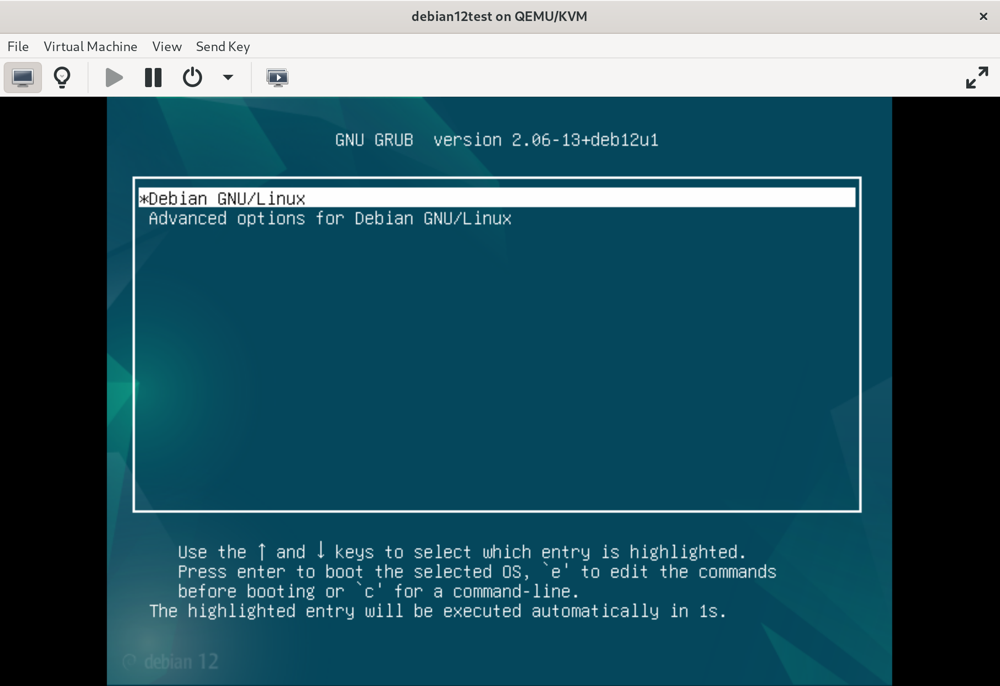
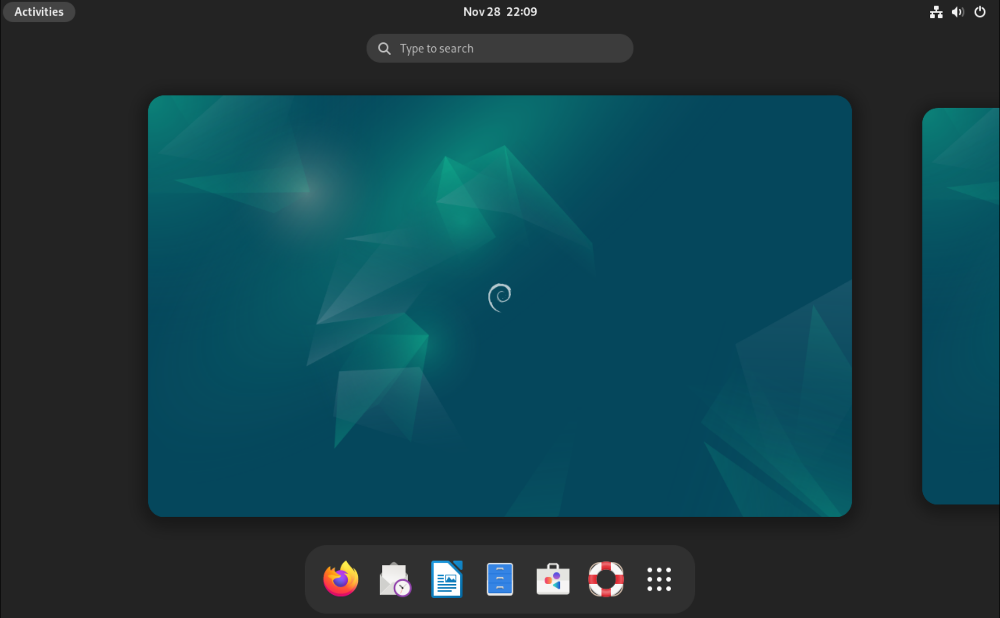

12 minutes
Strapping and Booting
At work we are using gsuite for most casual web tasks. Gdrive, calendar, all of that. As much as I am all about de-googling in my personal life, I remain to be tied to Google search for the time being. In the recent few months I started testing, then paying for Kagi search for my personal searching needs. This duality is giving me a new level of appreciation that we do have legitimate alternatives to the big monopolists in the search engine space. The slow but steady downwards spiral of Google’s product quality is becoming that much more apparent to me, as I start resenting my employer for making me have to endure it.
This entry isn’t about a project, but about trying to find a solution to a seemingly small issue, then going down a rabbit whole and coming out of it with some new knowledge, ready to be slapped on this here website. It required a lot of searching around and learning new things, but we got there in the end.
Just install Linux they said, it will be fine they said…
A dear friend of mine has gone onto the path of becoming a data scientist and a programmer of sorts, pursuing many a Udemy course in search of Python coding prowess. I volunteered to be a partner in crime for his coding adventure and tried to support him throughout his learning process as best I could, but there was a recurring theme to our regular coding get togethers: we spent half our time getting his computer to work instead of coding. I won’t lie, this was exaggerated by two facts: he was running Windows 10, and I know very little about Windows at this point. Bootstrapping WSL2 on his machine helped only partly, as that tool has its own problems (for example, not allowing to utilize VPN connections within the VM) which hamstrung some of our collaboration attempts.
Change
It was time for change. I encouraged my friend to give Linux a try, not as a the only OS on his main computer, but on an extra hand-me-down device he had laying around spare. Neither of us were certain that moving to Linux was going to be smooth and painless, so this small step had the best chance of success with little to no sacrifices.
We settled on Debian. Mainly for the reason that I am running either Debian or its derivatives on the daily, so it would decrease friction in our collaboration. It is also pleasantly stable and free of corpo-influences, that may make it unusable down the road. It was a joy when I received a message that my partner in Python-crime was going through the installation wizard one day, though he reached out because he had found the process less than smooth. Although pretty much all the default settings in the installer should give him a usable OS, he missclicked either here or there, and ended up with a dud of an install. This reminded me… That there is a way to preseed the installer with all the config necessary, and that I should be able to do if for him, so that he can skip the boring cumbersome part of this ordeal and go straight to the tasty, juicy coding bits instead!
You’re a wizard!
If you are familiar with the way VMs are typically deployed in Cloud environments, you will no doubt know the term cloud-init. It is a mechanism that allows to pass scripting and instructions into a virtual machine as it boots in order to automatically provision it. You may even be one of us dinosaurs, who goes way back, and remembers the days before the great on-prem exodus, where pxe-boot ruled the land of auto-provisioning. Admins would prepare special OS bootstrap images, expose them to a machine via DHCP options 66 and 67, and voila, glorious automation!
As you may imagine, neither of these options were available to me, though I still wanted to help my friend and offer him a pleasant start of his Linux adventure. I remembered somewhere that there is a way to pre-configure the Debian installer with all the options, in order to make the process essentially hands off and foolproof. So I started digging…
Documentation, sweet documentation…
A few minutes of searching yielded promising results. I found that, indeed, there is a preseeding mechanism for the DebianInstaller. I first landed here: https://wiki.debian.org/DebianInstaller/Preseed, then went on to click a bunch of links on this landing page. Appendinx B is an invaluable resource going in-depth on all the different options available. It however didn’t provide me with an immediate overview of what a minimal functioning preseed.cfg file should look like.
At first I tried the brute force method, to get a feel for what is possible. I have read that one can use an existing installation of Debian to automatically generate a preseed file, which essentially will collate all the options a user selects manually in the installation wizard for reuse in subsequent installations. I obtained this information from an excellent blog entry on linuxconfig.org. Credit where credit is due, most of the following content on this page comes from said blog entry, so hats off to the Egidio Docile for writing the piece! Nevertheless, I will follow with my findings, in part to create a note for my future self to remind me what I’ve done.
First try
I decided to create a new VM on my trusty framework laptop, going through the Debian installer manually, selecting the options appropriate to my friend’s needs. This, as expected, went smoothly. In the now running VM I opened the terminal, installed the necessary utility and generated myself a preseed file:
sudo apt-get update && sudo apt-get install debconf-utils
sudo debconf-get-selections --installer > preseed.cfg
Then SCP’ed it back onto my framework. At this point I realised, I am not sure how to deliver this config into the installer. I was convinced that the best way forward would be to embed it in the ISO itself. This way there should be no need for my friend to interact with the installer at all, I hoped… Well, it didn’t quite work.
It is not straightforward it seems to modify an ISO. Searching on Kagi and using their “quick answer” AI generator, I played with mounting the Debian netinstall ISO, copying its contents into a new directory, plus the preseed.cfg file, then packaging the directory again into a bootable ISO using the genisoimage utility. I was discouraged after a few attempts to boot a VM from my new ISO, and decided that even if I can make it work, the long turnaround time for baking my own ISOs with various preseed.cfg file versions makes it a bad choice for experimentation.
Thankfully there are multiple other mechanisms that can be used to deliver the preseed file to the installer, and the easiest one is to let it be downloaded during the course of an “automatic installation”. This has the downside of expecting that my friend will have to enter the URL on their machine to tell the installer where to get the file in question, but it let me iterate quickly and learn how to properly write such a file. As a way to share my preseed.cfg I uploaded it to my Nextcloud instance and created a share link for it. This can then be entered into the installer. On the other end of this, I mounted my Nextcloud storage locally on my framework, so that I could edit the file directly in real time, then boot up a fresh DebianInstaller in a VM and get it to download the current working version, rinse and repeat.
At this point it became apparent that the automatically generated preseed file would not work, and as some online guides alluded to, such generated files are extremely verbose and working with them can be tricky. Well, nothing was lost, I moved on to plan B, which is to actually learn how to write a functioning preseed file!
Plan B with a capital B
Now that I had a way to quickly test preseed files in a VM I decided to try to actually understand what goes into one. Again, I used linuxconfig.org blog post as a baseline, and just collating their snippets produced positive practical results for me:
d-i debian-installer/language string en
d-i debian-installer/country string US
d-i keyboard-configuration/xkb-keymap select us
d-i netcfg/get_hostname string machine
d-i netcfg/get_domain string
d-i passwd/root-login boolean false
d-i passwd/user-fullname string Name Surname
d-i passwd/username string username
d-i passwd/user-password-crypted password $6$1osx5k3fldnaKAC/$a0G7hmSFFXUvC3M.vzSPhSqJ1KOh5Y5K5hcn7tBzMpcyJBloLGCFynmHnGx065F5QrDpuSaxlQwmAQrMTxlCl.
d-i time/zone string US/East
d-i partman-partitioning/choose_label string gpt
d-i partman-auto/disk string /dev/vda
d-i partman-lvm/device_remove_lvm boolean true
d-i partman-md/device_remove_md boolean true
d-i partman-lvm/confirm boolean true
d-i partman-lvm/confirm_nooverwrite boolean true
d-i partman-auto/method string lvm
d-i partman-auto-lvm/guided_size string max
d-i partman-auto/choose_recipe select atomic
d-i partman-partitioning/confirm_write_new_label boolean true
d-i partman/choose_partition select finish
d-i partman/confirm boolean true
d-i partman/confirm_nooverwrite boolean true
d-i apt-setup/use_mirror boolean true
d-i mirror/country string US
d-i mirror/http/mirror select deb.debian.org
d-i mirror/http/proxy string
d-i apt-setup/cdrom/set-first boolean false
popularity-contest popularity-contest/participate boolean true
tasksel tasksel/first multiselect gnome-desktop,standard,ssh
d-i pkgsel/include string vim git
d-i finish-install/reboot_in_progress note
d-i cdrom-detect/eject boolean false
As per the guide, I used the mkpasswd utility to pre-assign the user a password of “password”. Yes, I will tell my friend to change it to whatever he wants. It’s either that or become a part of a botnet I guess…
sudo apt install whois
mkpasswd -m sha512crypt
This file takes care of most of the options in the Debain Bookworm installer. Most. It failed for me during the Grub config step, where I was forced to select the boot partition manually. The guide does not mention Grub setting anywhere, so I went back to the official docs to see what’s what and get some damn answers.
Voila!

Here is the info we needed: https://www.debian.org/releases/stable/i386/apbs04.en.html#preseed-bootloader
# Grub is the boot loader (for x86).
# This is fairly safe to set, it makes grub install automatically to the UEFI
# partition/boot record if no other operating system is detected on the machine.
d-i grub-installer/only_debian boolean true
# This one makes grub-installer install to the UEFI partition/boot record, if
# it also finds some other OS, which is less safe as it might not be able to
# boot that other OS.
d-i grub-installer/with_other_os boolean true
# Due notably to potential USB sticks, the location of the primary drive can
# not be determined safely in general, so this needs to be specified:
#d-i grub-installer/bootdev string /dev/sda
# To install to the primary device (assuming it is not a USB stick):
#d-i grub-installer/bootdev string default
# Alternatively, if you want to install to a location other than the UEFI
# parition/boot record, uncomment and edit these lines:
#d-i grub-installer/only_debian boolean false
#d-i grub-installer/with_other_os boolean false
#d-i grub-installer/bootdev string (hd0,1)
# To install grub to multiple disks:
#d-i grub-installer/bootdev string (hd0,1) (hd1,1) (hd2,1)
# Optional password for grub, either in clear text
#d-i grub-installer/password password r00tme
#d-i grub-installer/password-again password r00tme
# or encrypted using an MD5 hash, see grub-md5-crypt(8).
#d-i grub-installer/password-crypted password [MD5 hash]
# Use the following option to add additional boot parameters for the
# installed system (if supported by the bootloader installer).
# Note: options passed to the installer will be added automatically.
#d-i debian-installer/add-kernel-opts string nousb
An MD5 hash for a password for grub can be generated using grub-md5-crypt, or using the command from the example in Section B.4.5, “Account setup”.
As per the above block I was clearly missing the d-i grub-installer/only_debian boolean true and d-i grub-installer/bootdev string default lines.
The final config file looks something like this:
d-i debian-installer/language string en
d-i debian-installer/country string US
d-i keyboard-configuration/xkb-keymap select us
d-i netcfg/get_hostname string machine
d-i netcfg/get_domain string
d-i passwd/root-login boolean false
d-i passwd/user-fullname string Name Surname
d-i passwd/username string username
d-i passwd/user-password-crypted password $6$1osx5k3fldnaKAC/$a0G7hmSFFXUvC3M.vzSPhSqJ1KOh5Y5K5hcn7tBzMpcyJBloLGCFynmHnGx065F5QrDpuSaxlQwmAQrMTxlCl.
d-i time/zone string US/East
d-i partman-partitioning/choose_label string gpt
# WARN: The volume name may be different depending where you're installing!
d-i partman-auto/disk string /dev/vda
d-i partman-lvm/device_remove_lvm boolean true
d-i partman-md/device_remove_md boolean true
d-i partman-lvm/confirm boolean true
d-i partman-lvm/confirm_nooverwrite boolean true
d-i partman-auto/method string lvm
d-i partman-auto-lvm/guided_size string max
d-i partman-auto/choose_recipe select atomic
d-i partman-partitioning/confirm_write_new_label boolean true
d-i partman/choose_partition select finish
d-i partman/confirm boolean true
d-i partman/confirm_nooverwrite boolean true
d-i apt-setup/use_mirror boolean true
d-i mirror/country string US
d-i mirror/http/mirror select deb.debian.org
d-i mirror/http/proxy string
d-i apt-setup/cdrom/set-first boolean false
popularity-contest popularity-contest/participate boolean true
# Missing bootloader config
d-i grub-installer/only_debian boolean true
d-i grub-installer/bootdev string default
tasksel tasksel/first multiselect gnome-desktop,standard,ssh
# Extra packages to install
d-i pkgsel/include string vim git zsh htop curl git ripgrep fd-find bat byobu kitty-terminfo tldr
d-i finish-install/reboot_in_progress note
d-i cdrom-detect/eject boolean false
I must say, I am quite happy with how this turned out. It is certainly going to help me bootstrap VMs and machines faster going forward. There are many other options that you can configure here, the most notable is probably the network config, although the pitfall of the public URL based delivery method for the config file means that the installer needs Internet access before the configuration can be applied, so do bear that in mind.

Lastly, something to remember is that the d-i partman-auto/disk string /dev/vda line may differ from one install to another. From what I gather, the default disk path in a KVM install of debian will always be /dev/vda, while bare metal would be /dev/sda (for a SCSI or SATA device). Again, for detailed info on this refer to the official docs: https://www.debian.org/releases/stable/i386/apbs04.en.html#preseed-partman
Oh, and as a bonus, I also found this sample config helpful to put it all in perspective: https://www.debian.org/releases/bullseye/example-preseed.txt.
Happy times
As of the time of writing this, we are yet to attempt this automated install process remotely on my friend’s machine. I must say, it is quite exciting that we have the technology to automate and simplify things at a distance, and I am looking forward to see how we will fail at it tomorrow! Though I would be hesitant to bet that any Python coding will be happening on that new machine in the next day or so, knowing our luck. And with that, till next time, dear reader.
2354 Words
2024-11-28 20:27